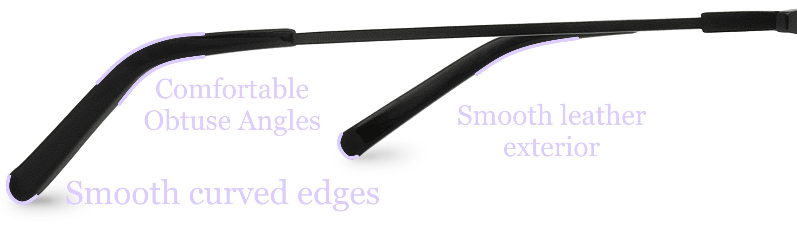

The Art Within Omniphotics
Absorb the art within Omniphotics
Comfort Crowd
Like most modern products, Omniphotics have a comfortable and ergonomic design. While their main purpose is of course their adaptive lighting, The creative and less scientific parts of Omniphotics are just as important. Omniphotics are long and extend past the ear to prevent stress on the ear. The ends of the glasses are also specifically curved to create a more comfortable design. The sides that extend back are also very thin and lightweight to put less pressure on the ears and nose.
Overall, the artistic elements of Omniphotics show in the comfortable and ergonomic design. They are glasses after all, and it would be an extreme oversight if they were uncomfortable. There was a lot of thought and care into making Omniphotics as comfortable and wearable as possible.
Omniphotics Art
Copyright © 2020 by A Nonexistant Inc.
Prior Edition © 2020 by An Equally Nonexistent Inc.
All rights not reserved. Any part of this website may be reproduced
without permission from the publisher, especially considering he is 17.